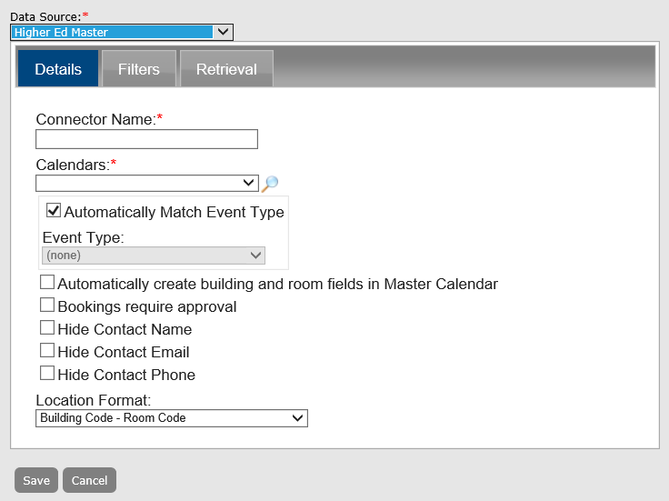

A connector is a direct feed from your EMS database to your Master Calendar database. If you are an EMS customer and a Master Calendar customer, a connector prevents you from having to carry out double entry of your events. You can enter all your events once into your EMS system, then use a connector to import one or more, or all your EMS events into Master Calendar. See Also: Connect to Data Sources.
This topic will provide information that will allow you to:
Managing connectors in EMS Master Calendar consists of adding a connector, filtering the events to import, setting the frequency of the import, activating and inactivating connectors, editing a connector, running a connector, purging a connector, and deleting a connector. You can also generate a Connectors List report and you can view the history for a connector.
As with data sources, the Connector function requires that your organization purchase the optional module, Master Calendar Data Connectors.
In order to use the Master Calendar Data Connectors, an organization must be properly licensed. If unsure about whether the EMS Data Connector Module has been purchased, log into the Master Calendar site, go to the systemcheck.aspx page, click the License Information heading and review the Licensed For list and look for a description to state “EMS Connector.”
If an organization was not previously licensed for the EMS Data Connector Module but is now, update the registration information by logging in to the Master Calendar, navigate to Admin > Site Administration > Registration, entering the new licenses information then click Save License Data. Please note, the license information is case sensitive and needs to be entered in exactly how it was provide from EMS Software.
After entering the registration information, Master Calendar must re-read the license by going to the systemcheck.aspx page, clicking the License Information heading and then clicking Read License. At the very top of the page, it should state “License read successfully.”
Remember, the data source is for the connection to the EMS database, and you must also use a connector to import UDFs into your Master Calendar database. If you do not see the data source that you want to use for the connector, then it has not been created.

|
Field |
Description |
|---|---|
|
Connector Name |
The title or the name for the connector. |
|
Calendars |
A list of all active calendars to which you have access as a Calendar Manager. Click the Lookup icon to open the Calendars dialog box and select the calendar or calendars to which you are importing the EMS events. |
|
Automatically Match Event Type |
Selected by default. If you leave this option selected, then every event type in the selected data source is mapped according to the event type mapping that you carried out for the data source. If you clear this option, then the Event Types dropdown list becomes available. |
|
Event Type |
Available only if you clear the Automatically Match Event Type option. Every event type in the selected data source will be mapped to the MC event type that you select on this dropdown list. |
|
Bookings Require Approval |
If you select this option, the imported events will follow the approval workflow for the Manage Events option. See Also: Managing Events. |
|
Hide Contact Name |
If you select this option, the name of the event’s contact person does not show on the calendars to which the event is imported. |
|
Hide Contact Phone Number |
If you select this option, the contact phone number for the event does not show on the calendars to which the event is imported. |
|
Hide Contact Email |
If you select this option, the contact email for the event does not show on the calendars to which the event is imported. |
|
Location Format |
Determines the location format that is imported from EMS. For example, if one of the buildings for an event type is the Strong building, you can indicate whether you want to import the EMS Building Description (STRONG) or the EMS Building Code (STR). Eight options are available:
|
When you filter the EMS events, you must select at least one event type, one status, and one group type, or no events are pulled from your EMS database into your Master Calendar database.
If you do not select any specific groups for a group type, then EMS events tied to all groups are pulled. Optionally, to filter the connector based on the EMS events for a specific group:
The frequency of the data import means how often are you querying the EMS database. The greater the frequency, the more current is the “synch up” between your EMS database and your Master Calendar database.
|
Field |
Description |
|---|---|
|
Time Period |
The time frame for which the events are to be imported. Two values are available:
Specific Dates options
|
|
Days Forward |
Available only if you select Range of Days for the Time Period. Indicates the number of days into the future from the current day’s date that the event types are to be imported from the EMS database. |
|
Start Date/End Date/No End Date |
Available only if you select Specific Dates for the Time Period. You must enter a start date. You must enter an end date, or you must select No End Date. If you select No End Date, then all future events are pulled.
|
|
Frequency |
Indicates how often you are querying the EMS database.
|
You can edit both active and inactive connectors.
You can purge both active and inactive connectors. When you purge a connector, all the events that you imported into Master Calendar using the selected connector are deleted. The connector itself is not deleted. It remains available either on the Active or Inactive tab of the Connectors page.
To manually override the frequency setting for a connector, you run a connector. After you run a connector, the connector will continue to run at its regularly scheduled times.
You can only delete inactive connectors. To delete a currently active connector, you must first de-activate the connector. When you delete a connector, none of the events that were imported through the connector are deleted. To delete the events, purge the data first.
You can generate a Connectors List report, which lists all the active or inactive connectors that are configured in Master Calendar. The report includes the connector name and data source, the connector filters, the event types that imported by the connector, and the calendars to which the event types are imported. It also indicates whether automatching for the imported event types has been selected.
An onscreen preview of the Connectors List report opens in its own window. A variety of options are available from this preview, including (from left to right at the top of the onscreen preview) the options to search the report results, print the report in its entirety, print the currently displayed report page, and export the report to a file and save the file.

The history for a connector consists of the original creation date of the connector, the name of the user who created the connector, and the last date that the connector was edited as well as the name of the user who last edited the connector. You can view the history for both active and inactive connectors.